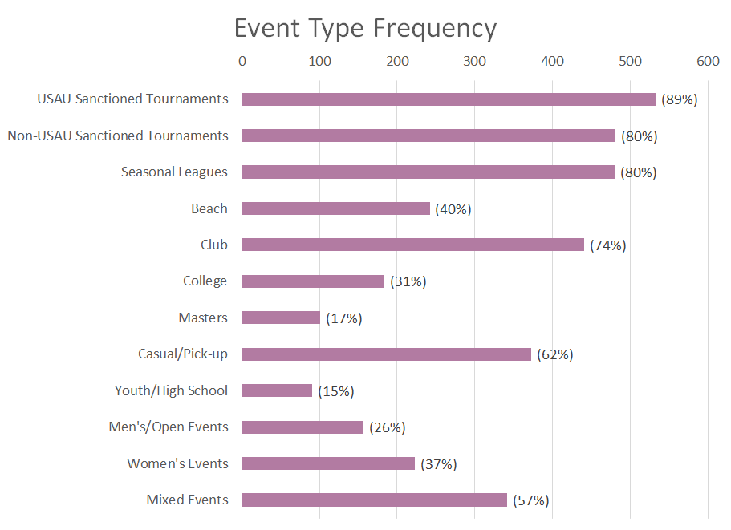
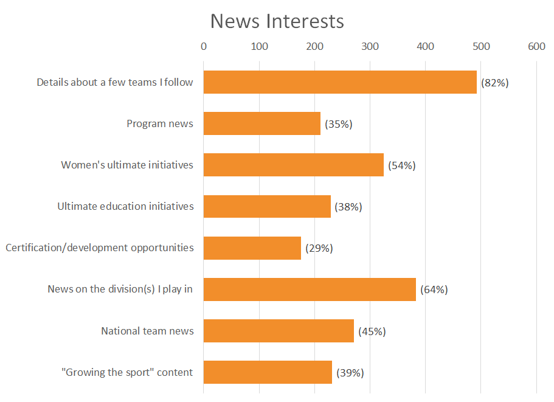
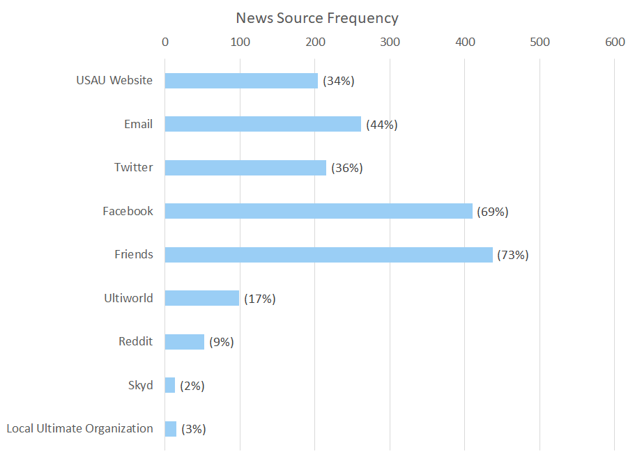

Overview & Scope
For those unfamiliar with the organization, USAU (USA Ultimate) is the non-profit governing body for Ultimate Frisbee in the United States. The USAU website faces the challenge of organizing a large quantity and variety of information for users with differing needs, interests, and goals. The website also keeps track of user, team, event, and community data and provides an interface that users will regularly interact with to stay engaged in a sport they love. While the organization itself has been making strides toward growing the sport and improving the player experience, it seemed to me that the current website implementation did not effectively contribute to that goal.
This design problem started out as the focus of a Prototyping and Usability Testing class project with an initial scope of the member dashboard. When I reached out to USAU and learned that they'd be interested in seeing the results of my work, I expanded the scope to include the entire website. To get a better sense of the Ultimate community's thoughts on and experiences with the website, I drafted and shared a Google Forms survey. The results are shared here with the main body providing main ideas and additional detail available if you click the or icons next to headers.
Thank you:
- To everyone who completed and shared the survey. I appreciate the time and thought that you put into your responses (also, the feedback on the survey questions).
- To everyone interested in seeing the results, for your patience as I delayed analysis for other obligations, pre-processed data, and combed through the longer text responses.
- To my professor for the assistance with some frequency calculations and advice and feedback on my process
Sample Statistics
I received a total of 598 survey submissions from 42 states (plus Washington DC and 3 Canadian provinces). Responders have played Ultimate for an average of 9.5 years with a standard deviation of about 7. The maximum number of years played was 47.
Roles in Ultimate Community
Player
Team Captain
Fan
Coach
Volunteer
Event Organizer
Observer
Type of Events Paricipated In


Results
Action Frequencies

News Interests
News Sources
Event Tracking
[Content to come]
USAU App Usage
[Content to come]
Member Portal Content
Category of content is followed by the number of times it was mentioned. Subcategories indicate the number of times specific details were included to further refine the category.
[Organization work-in-progress]
- Events/Tournaments - 303
- Calendar - 34
- Upcoming - 157
- I or my team is registered for - 45
- Otherwise relevant to me (nearby, expressed interest, my division) - 41
- Current/Ongoing - 34
- Recent Past - 76
- Archive - 5
- My Teams - 98
- Rankings - 94
- News - 76
- Account Info - 64
- Action Items/Notifications - 46
- Rostering/Team Management - 35
- Division Info - 15
- Rules - 10
Frustrations
[Content to come]
Desired Changes
The following are the common threads that emerged in response to the question "If you could change anything about the USAU website, what would it be?" Hover over the categories for details.
Navigation & organization
The most common concern. Navigation was described as unintuitive and requiring too many clicks or too much scrolling.
Responsiveness/Mobile-friendliness
Ultimate players are often on-the-go and want easy access to tournament schedules, scores, and rosters from their phones.
Simplification & appearance
Users describe the site as cluttered, busy, and outdated and would like to see fewer navigation options, less and larger text, and a clean, modern, and appealing look and feel. Several point out that the current design doesn't leave a positive first impression.
Personalization
Everyone wants what interests them to be front and center but interests vary between individuals. To personalize the content, responders suggest the addition of features to favorite events, follow teams, and customize one's home page.
Searching
Some described googling "usau" and their search terms to avoid using USAU's search features or navigation. Responses describe the tournament search tool in particular as complicated and suggest improving the filters. Users would also like to see a search feature for teams.
Team pages/archives
Users would like to see all results for a team (including past seasons) in one place.
Public player profiles
Users want to see not just team histories but player histories (past teams and events) on public profiles.
Rules features
Many responders wanted a search feature for rules. It was also suggested that pictures, explanations by observers (via video), or a section to clarify questions accompany the rules.
Score reporter
Several mentioned a preference for the older version of score reporter and many would like to see a simpler, speedier, and more user friendly version of the tool. Regarding performance, one event organizer described having to build extra time into the end of pool play and start of bracket play to allow for score updating.
Member portal
Many would like to see a more apparent login area immediately upon accessing the website. This was also frequently mentioned for the member portal content question (when the question was misinterpreted as asking for what they'd like to see on the home page). Users would like to see a more intuitive member dashboard and a more streamlined membership renewal process (e.g. including waiver signing).
Rostering
The team and event roster-building process was described as unintuitive and cumbersome. Some would like to see one team entity that keeps tracks of previous and current rosters rather than different entities for each year. One team manager described players signing up for a team from a previous year.
Appealing to an audience
Many players want to see content that's timely and relevant to them first (e.g. upcoming deadlines, current rankings) while others mention making the home page more welcoming/appealing to new players and the general public. The latter group advocates for showing Ultimate in action and story-telling.
Non-USAU Events
Users would like non-USAU (unsanctioned) events, scores, and rankings to be processed and displayed by the website.
Miscellaneous
For how specific this feedback is, quite a few people mentioned removing the JavaScript scrolling modules for news and events (describing it as "behemoth" in one case). The opening of new tabs when links are clicked also irritated several people. Websites that were mentioned as potential models for USAU were the MLU's old site, Ultimate Central, ESPN, US Soccer, and US Rugby.